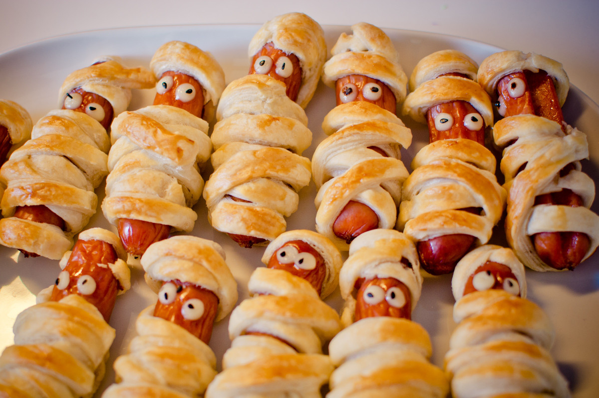

Hotdog Roll-Ups
Home

Hotdog roll-ups are like the snack version of a hot dog.
They're cheesy, crispy, and super easy to make.
You wrap a hotdog in bread
or dough, cook it up, and boom! Instant comfort food.
Description
Hotdog roll-ups are what happen when comfort food meets lazy-day creativity.
It's the kind of snack you throw together when you're not in the mood to cook but still want something warm, tasty, and satisfying.
There's nothing fancy about them, no fancy ingredients and no measuring. Simply good vibes and guilty goodness.
Whether you're feeding a bunch of friends or just raiding the fridge solo, they hit a perfect spot for indulgence.
Ingredients
- 8 (1-ounce) slices white bread (such as Wonder Bread®)
- 2 tablespoons yellow mustard
- 4 thin slices sharp Cheddar cheese, halved
- 8 beef hot dogs (such as Oscar Mayer® Classic Wieners Hot Dogs)
- 4 tablespoons minced yellow onion
- 2 tablespoons plus 2 teaspoons sweet pickle relish
- 1/4 cup barbecue sauce
- 1/4 cup mayonnaise
- 1/2 teaspoon seasoned salt (such as Lawry's®)
Steps
- Gather all ingredients
- Using a rolling pin, roll each bread slice until entirely flat.
Trim just the crust off each bread slice, forming a 4x4-inch square.
Spread each bread slice with an even layer of mustard (about 3/4 teaspoon per slice).
- Working with 1 slice of bread at a time, place a halved cheese slice
on the edge of the bread closest to you; place 1 hot dog horizontally on
top of the cheese slice. If needed, trim the ends of the hot dog so that
no hot dog extends over edges of bread. Spoon 1 1/2 teaspoons onion horizontally
across the cheese slice above the hot dog, followed by 1 teaspoon of relish.
-
Roll up tightly, applying gentle pressure to help seal the bread seams together.
Slice crosswise into 3 equal pieces (about 1 1/4-inches each), and transfer to a
serving platter. Repeat process with remaining ingredients. Preheat an air fryer
to 400 degrees F (200 degrees C) for 5 minutes, or according to manufacturer's
instructions. Lightly coat tops and sides of roll-ups with cooking spray.
Working in 2 batches, add roll-ups to basket, spacing them 1/2-inch apart, and
cook until bread is lightly golden brown, about 5 minutes.
- Stir together barbecue sauce, mayonnaise, and seasoned salt in a small bowl until evenly combined.
- Serve hotdog roll-ups with mayonnaise mixture.
Source: Allrecipes: Hotdog-roll-ups-recipe